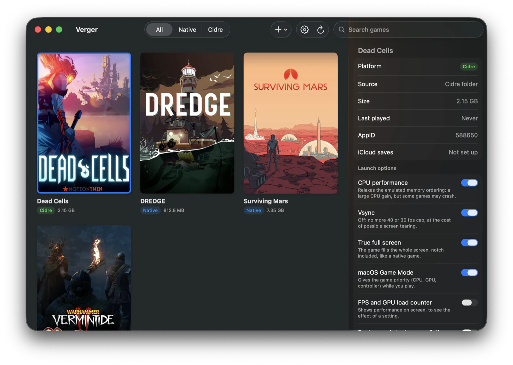

The game library for Mac that runs your Windows games.
Verger installs, tunes and launches your games, the ones on your Steam account and the others, without ever opening a Terminal.
For Apple Silicon Macs, macOS 26 (Tahoe) or later.


One library, all your games
Click a card to open its panel, double-click to launch the game. The panel is also where you uninstall a game.
-
Install a Steam game
Verger lists the games on your account that are not installed. The Windows version is downloaded through Cidre, with progress; when a macOS version exists, it is offered first.
-
Add a non-Steam game
Choose its
.exeand it joins the library. An installer (GOG, itch…) can be run from Verger too. -
Keep track of updates
A game that is behind the latest published build is tagged "Update".
-
Pick the cover art
Steam's, an image of your own, or a search in SteamGridDB (free key), including for non-Steam games.
Launch options you can read
Each option says what it gains and what it risks: CPU performance, vsync, true full screen, macOS Game Mode, Steam overlay, game language, performance counter, background shader compilation.
- What Cidre ships
- Your general settings
- What you force for one game
Weakest to strongest. A dot marks what you set yourself; one click gives it up.

Everything is set from the app
- Cidre
- Its version, the status of each part, its update.
- Steam
- Sign in, sign out, switch account, in a window. Verger passes your password to SteamCMD, Valve's tool, and does not keep it.
- Options
- The general launch settings.
- Verger
- Its language, French or English, and its own update from GitHub.

Install
-
Download
Get
Verger.zipfrom the latest release on GitHub and unzip it. -
Right-click → Open
The first time only: the app is not notarized by Apple, so a double-click would be refused.
-
Let Verger install Cidre
Verger offers to install the engine (about 400 MB). Accept, it handles the rest.
Requirements
- An Apple Silicon Mac
- macOS 26 (Tahoe) or later
- The Steam client, for Steam games
Under the hood: Cidre
Verger is the interface. The engine is called Cidre: four projects put together to run Windows games as native arm64, without Rosetta.
Verger contains none of its binaries. It installs Cidre and keeps it up to date on its own; there is nothing else to install.
Cidre's repository on GitHub →- FEXruns the games' x86 code on arm64
- Wineruns Windows programs
- DXVKtranslates Direct3D to Vulkan
- KosmicKrispthe Vulkan driver, on top of Metal
What Verger does not do (yet)
- Not every game runs. Cidre is young; compatibility is checked game by game.
- No online play protected by Easy Anti-Cheat. Some games offer a mode without anti-cheat (Vermintide 2's "Modded Realm"): that is the "Permissive anti-cheat" option.
- The Steam overlay is brand new. Shift+Tab works in Steam games, but it has been tried on one game only so far; the "Steam overlay" option turns it off if a game displays badly.
- Steam sign-in by password, passed to SteamCMD. Not by QR code yet.
- The app is not notarized by Apple: hence right-click → Open on first launch.
- No screen to manage saves. Cidre syncs the saves of a few Windows games to iCloud, but Verger cannot manage them yet.